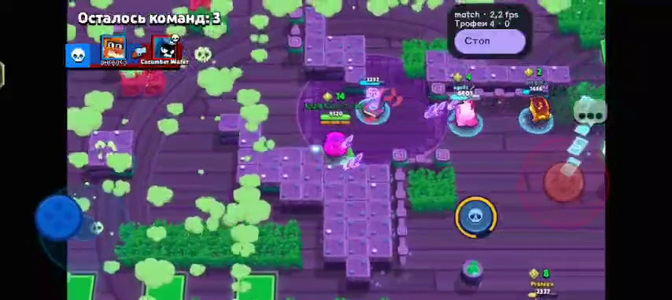

XLAMBOT / ANDROID
xlamBOT — Brawl Stars bot for Android
xlamBOT is a Brawl Stars bot for Android. It reads the game screen and controls movement and attacks through touch input, directly on your device.

What is included in Free?
- Three play styles: aggressive, balanced and tactical.
- Movement, attacks and abilities, basic dodging, obstacle and gas awareness.
- Brawler queues, match history and trophy statistics.
- Floating start/stop controls, an activity log and manual APK updates.
Android 8 or later; ARM64, ARMv7 and x86_64. Root and a permanently connected PC are not required. This public repository contains releases, the website and documentation; Android application sources are private.
Quick setup
- Download the APK and install it. For an update, install over the existing app to preserve local settings and history.
- Enable the xlamBOT Accessibility service for touch controls, and allow the floating overlay.
- Connect the game image source. Android 11+ can use Accessibility screenshots; Android 8–10 uses the system screen-sharing permission.
- For the first test, use English in Brawl Stars, Trio Showdown and default control positions. Choose the correct brawler and play style in xlamBOT.
- Open regular Brawl Stars and start from the floating panel. Keep the game visible.
On supported Android 14+ systems, screen sharing offers a single app option. Select Brawl Stars. This does not add background or locked-screen gameplay.
Optional Plus. Try it for 72 hours.
Plus adds improved dodging, optional predictive aiming, direct GPU/adaptive NNAPI processing, reduced-resolution battle capture, bush tactics, power-cube boxes, switching brawlers after a net +N trophy gain, and occasional idle pins.
50 Telegram Stars / 30 days
One free 72-hour trial per Telegram account. Renewal is manual; there are no automatic charges. Open xlamBOT → Plus → Telegram, activate access in @xlambottt_bot, then return and refresh access. Requires xlamBOT 1.1.0 or later.
Hardware acceleration depends on device drivers. The app compares speed and recognition results and falls back to CPU when needed. It does not promise a particular game FPS or trophy gain.
Help us improve device compatibility
If the bot stops or shows unknown, include your device model, Android version, xlamBOT version, capture source, brawler/mode, recent log lines and a short recording in an issue. Reports of working devices are welcome too.
For Connection lost / RETRY LOGIN, use 1.1.2 or newer. After installing an update, turn the Accessibility service off and on again.
xlamBOT is an independent project and is not affiliated with Supercell. Game names and images belong to their respective owners.
GitHub · Release notes · Back to home
Maintained by Olegu621 · Updated: